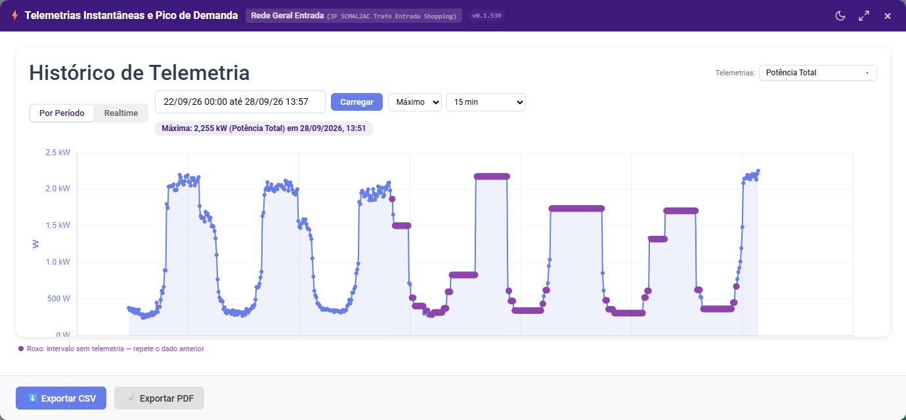
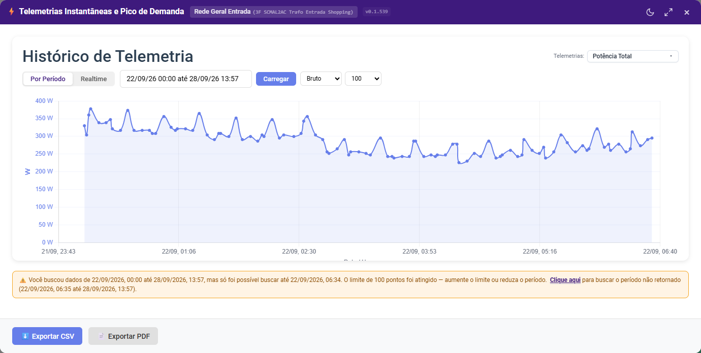
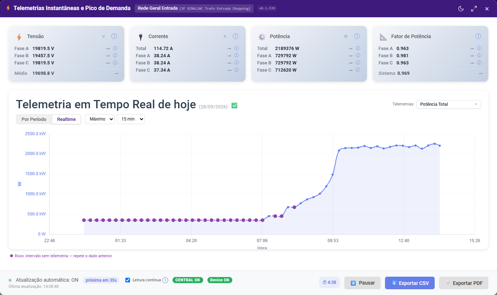
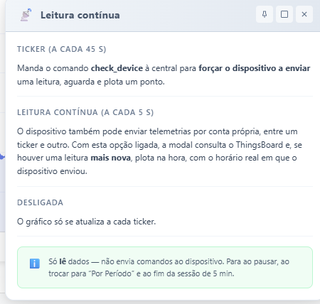

Visão geral
A modal ⚡ Telemetrias Instantâneas e Pico de Demanda mostra, para um dispositivo de energia (entrada, medidor, etc.), duas visões complementares. Cada aba tem o seu próprio gráfico e os seus próprios dados — o que você consulta em uma não aparece na outra.
- Por Período — histórico de uma ou duas telemetrias em um intervalo de datas, com o pico de demanda destacado.
- Realtime — leitura do dia de hoje (desde 00:00) de Tensão, Corrente, Potência e Fator de Potência por fase, atualizada automaticamente.
Como acessar
- Em um card de dispositivo de energia, clique no ícone Dashboard (⚡) para abrir a modal Gráfico de Energia.
- Dentro dela, clique no botão ⚡ Telemetrias Instantâneas e Pico de Demanda.
Aba "Por Período" (padrão)
Ao abrir a modal, a aba Por Período já vem selecionada e carregada — nenhuma conexão em tempo real é iniciada até que você clique em Realtime.

| Elemento | O que faz |
|---|---|
| Seletor de Telemetrias | Escolha até 2 grandezas diferentes para comparar no mesmo gráfico |
| Período de datas | Intervalo consultado; clique em Carregar após alterar |
| Agregação dos pontos | Bruto, Média, Máximo, Mínimo ou Soma — define qual dos dois campos abaixo aparece |
| Limite de pontos (só Bruto) | 100, 500, 1000, 5000, 10000, 25000 ou 50000 |
| Intervalo de agrupamento (fora do Bruto) | 15 min, 30 min, 1 hora, 2 horas, 4 horas, 12 horas ou 1 dia (24 horas) |
Bruto mostra os valores reais recebidos do dispositivo, sem agrupar — por isso não tem intervalo. As demais agregações trazem um ponto por intervalo e não têm limite de pontos. Os cards de Tensão/Corrente/Potência/Fator de Potência não aparecem nesta aba.
Exportar CSV / Exportar PDF, no rodapé, levam os dados para fora do dashboard.
Pontos roxos: intervalos sem telemetria
O dispositivo só envia a potência quando o valor muda (ou quando a central força uma leitura). Se uma máquina fica estável em 10.000 W por 40 minutos, não chegam telemetrias nesse tempo. Para que o gráfico tenha um ponto em cada intervalo, quando uma agregação não encontra dados num intervalo, o gráfico repete o valor do intervalo anterior e marca o ponto em roxo, com a linha tracejada até ele.
- Ao passar o mouse, o tooltip mostra "↺ Mesmo dado anterior (sem telemetria neste intervalo)".
- Uma legenda aparece abaixo do gráfico sempre que houver pontos assim.
- Bruto nunca preenche nada — mostra exatamente o que o dispositivo enviou.
- No início do período, o primeiro valor repetido vem da última leitura anterior à data inicial.
Aviso de dados incompletos (Bruto)
Com Bruto, se os dados retornados terminam antes do fim do período pedido, um aviso fica fixo abaixo do gráfico até você fazer uma nova consulta.

- Quando o motivo é o limite de pontos, o aviso traz o link Clique aqui: ele preenche o período com o trecho que faltou — começando 1 minuto depois do último registro recebido e indo até o fim originalmente pedido. Depois é só clicar em Carregar.
- Quando o dispositivo simplesmente não tem dados depois daquela data, o aviso informa isso e não oferece o link.
- Diferenças pequenas (até 15 minutos) entre o fim do período e o último dado não geram aviso.
Aba "Realtime"
Clique em Realtime para ver o dia de hoje. O título mostra a data e o estado dos dados: Telemetria em Tempo Real de hoje (28/09/2026) ✅.

| Ícone | Significado |
|---|---|
| ✅ | Há telemetrias de hoje e central/dispositivo estão respondendo |
| ⚠️ | Atenção: central ou dispositivo falhou numa verificação (ainda não é offline) |
| 🔴 | Central ou dispositivo offline |
| ❌ | O dispositivo não enviou nenhuma telemetria hoje |
- Quatro cards por fase — Tensão (V), Corrente (A), Potência (W) e Fator de Potência. O ícone ⓘ de cada card abre mais detalhes.
- Gráfico do dia — sempre de 00:00 até agora. Ao voltar de Por Período, o gráfico de hoje continua de onde estava; o histórico do período nunca entra nele.
- Agregação e intervalo — ao lado das abas: Bruto (padrão), Mínimo, Máximo, Média ou Soma; fora do Bruto, intervalo de 15 min, 30 min, 1 hora, 2 horas ou 4 horas. Intervalos sem telemetria repetem o dado anterior em roxo.
- Contador de sessão (ex.:
⏱ 4:50) — ao zerar, a atualização automática para sozinha. - Pausar / Retomar e Exportar CSV / PDF no rodapé.
Rodapé: mostra "Atualização automática: ON", o tempo até a próxima atualização e, numa linha abaixo em texto discreto, o horário da última atualização. A cada ciclo (por padrão 45 segundos: 30 s de intervalo + 15 s de espera) a modal manda um comando à central para forçar o dispositivo a enviar uma leitura e plota um ponto — o ticker.
Leitura contínua (ⓘ)
O dispositivo pode enviar telemetrias por conta própria entre um ticker e outro. Com Leitura contínua ligada (padrão), a modal consulta o ThingsBoard a cada 5 segundos e, quando há uma leitura mais nova, plota na hora com o horário real em que o dispositivo enviou. Desligada, o gráfico só se atualiza a cada ticker.

Só lê dados — não envia comandos ao dispositivo — e para junto com a atualização automática (ao pausar, ao trocar para Por Período e ao fim da sessão).
Indicadores de saúde: CENTRAL e Device
Os badges do rodapé têm três estados. Uma falha não leva direto a offline:
| Badge | Quando aparece |
|---|---|
| OK (verde) | A última verificação foi bem-sucedida |
| ATENÇÃO (âmbar) | A verificação falhou, mas ainda não atingiu o limite de tentativas (o tooltip mostra a tentativa, ex.: 2/3) |
| OFFLINE (vermelho) | 3 falhas seguidas (valor fixo por enquanto) |
- CENTRAL — falha quando a chamada de verificação (
check_device) à central não responde. - Device — falha quando a telemetria mais recente do próprio dispositivo tem mais de 30 minutos. Ex.: são 13h e a última leitura foi às 12h20 → ATENÇÃO; se continuar assim por 3 verificações seguidas → OFFLINE.
- Qualquer verificação bem-sucedida zera a contagem e o badge volta para OK. Uma leitura nova do dispositivo (inclusive pela leitura contínua) também volta o Device para OK.
Formato dos números
Todos os valores numéricos da modal usam separador de milhar . e separador decimal , (ex.: 2.198,00), padrão brasileiro. Potências grandes são escaladas automaticamente de W para kW quando faz sentido.
Dúvidas frequentes
Por que a aba Realtime não teve nenhuma leitura ao abrir a modal?
Por padrão, a modal abre em Por Período e não inicia a conexão em tempo real automaticamente. Clique em Realtime para começar.
O pico de demanda não mostra hora, só a data — é um bug?
Não. Acontece com o agrupamento de 1 dia (24 horas): o pico representa o valor máximo do dia inteiro, sem um horário específico.
O que são os pontos roxos?
Intervalos em que o dispositivo não enviou telemetria (por exemplo, porque a potência ficou estável). O gráfico repete o valor do intervalo anterior. Só aparecem fora do Bruto.
Por que sumiu o intervalo de agrupamento (ou o limite de pontos)?
Bruto mostra só o Limite de pontos; as outras agregações mostram só o Intervalo de agrupamento.
Apareceu um aviso dizendo que só foi possível buscar até uma data anterior.
Com Bruto, o limite de pontos foi atingido (ou o dispositivo não tem dados até o fim do período). Clique em "Clique aqui" no aviso para preencher o período restante e depois em Carregar, ou aumente o limite de pontos.
O badge ficou âmbar (ATENÇÃO) — a central caiu?
Ainda não. ATENÇÃO indica uma falha isolada; só após 3 verificações seguidas sem sucesso o estado vira OFFLINE.
A leitura em tempo real parou sozinha depois de alguns minutos.
É esperado — a sessão tem um tempo limite (contador no rodapé). Clique novamente em Realtime, ou em Retomar, para iniciar uma nova sessão.